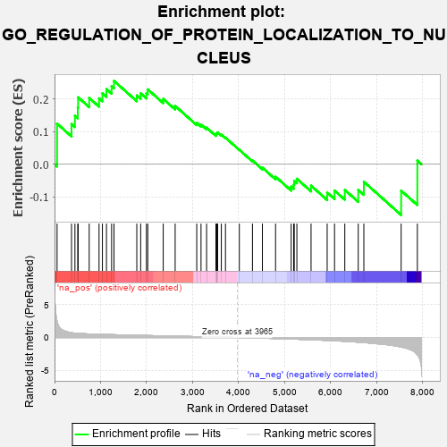
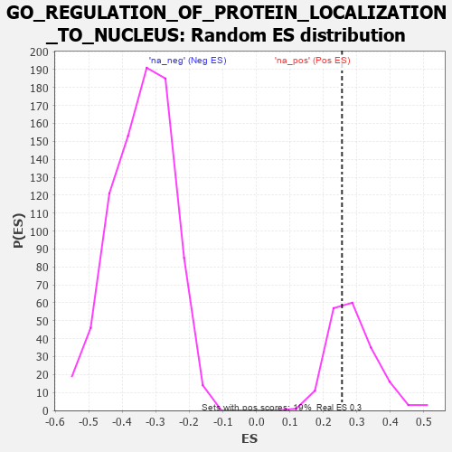

| | | Dataset | 7d |
| Phenotype | NoPhenotypeAvailable |
| Upregulated in class | na_pos |
| GeneSet | GO_REGULATION_OF_PROTEIN_LOCALIZATION_TO_NUCLEUS |
| Enrichment Score (ES) | 0.2556753 |
| Normalized Enrichment Score (NES) | 0.8812224 |
| Nominal p-value | 0.6505376 |
| FDR q-value | 0.8615326 |
| FWER p-Value | 1.0 |
Table: GSEA Results Summary

Fig 1: Enrichment plot: GO_REGULATION_OF_PROTEIN_LOCALIZATION_TO_NUCLEUS
Profile of the Running ES Score & Positions of GeneSet Members on the Rank Ordered List
| PROBE | GENE SYMBOL | GENE_TITLE | RANK IN GENE LIST | RANK METRIC SCORE | RUNNING ES | CORE ENRICHMENT | | 1 | DCLK1 | | | 55 | 2.532 | 0.1248 | Yes |
| 2 | LARP7 | | | 369 | 0.731 | 0.1234 | Yes |
| 3 | SUFU | | | 443 | 0.665 | 0.1488 | Yes |
| 4 | NUP54 | | | 505 | 0.627 | 0.1737 | Yes |
| 5 | NMD3 | | | 513 | 0.625 | 0.2054 | Yes |
| 6 | SUMO3 | | | 753 | 0.544 | 0.2035 | Yes |
| 7 | ZPR1 | | | 967 | 0.491 | 0.2022 | Yes |
| 8 | AKT1 | | | 1040 | 0.476 | 0.2179 | Yes |
| 9 | SRC | | | 1128 | 0.459 | 0.2308 | Yes |
| 10 | KAT7 | | | 1240 | 0.440 | 0.2397 | Yes |
| 11 | DKC1 | | | 1292 | 0.431 | 0.2557 | Yes |
| 12 | NUP58 | | | 1787 | 0.340 | 0.2111 | No |
| 13 | NUP62 | | | 1871 | 0.324 | 0.2174 | No |
| 14 | MCRS1 | | | 1996 | 0.305 | 0.2177 | No |
| 15 | DMAP1 | | | 2025 | 0.301 | 0.2298 | No |
| 16 | SIN3A | | | 2361 | 0.251 | 0.2006 | No |
| 17 | BAG3 | | | 2620 | 0.209 | 0.1790 | No |
| 18 | CHP1 | | | 3089 | 0.138 | 0.1272 | No |
| 19 | RBM22 | | | 3182 | 0.125 | 0.1221 | No |
| 20 | SMAD3 | | | 3303 | 0.105 | 0.1124 | No |
| 21 | UFM1 | | | 3506 | 0.077 | 0.0909 | No |
| 22 | UBR5 | | | 3518 | 0.074 | 0.0934 | No |
| 23 | HDAC3 | | | 3528 | 0.072 | 0.0960 | No |
| 24 | PIN1 | | | 3543 | 0.069 | 0.0978 | No |
| 25 | NOLC1 | | | 3623 | 0.056 | 0.0908 | No |
| 26 | NF1 | | | 3713 | 0.040 | 0.0816 | No |
| 27 | PARP1 | | | 4014 | -0.010 | 0.0443 | No |
| 28 | RAN | | | 4299 | -0.059 | 0.0116 | No |
| 29 | PINX1 | | | 4515 | -0.097 | -0.0105 | No |
| 30 | TERT | | | 4801 | -0.157 | -0.0383 | No |
| 31 | FLCN | | | 5140 | -0.235 | -0.0686 | No |
| 32 | SMO | | | 5195 | -0.247 | -0.0626 | No |
| 33 | IPO5 | | | 5207 | -0.248 | -0.0511 | No |
| 34 | CDK1 | | | 5264 | -0.262 | -0.0445 | No |
| 35 | NVL | | | 5572 | -0.338 | -0.0656 | No |
| 36 | STK11 | | | 5922 | -0.443 | -0.0866 | No |
| 37 | PLK1 | | | 6082 | -0.500 | -0.0807 | No |
| 38 | DCLK3 | | | 6305 | -0.578 | -0.0786 | No |
| 39 | TPR | | | 6597 | -0.709 | -0.0784 | No |
| 40 | GSK3B | | | 6719 | -0.768 | -0.0537 | No |
| 41 | DCLK2 | | | 7529 | -1.439 | -0.0808 | No |
| 42 | FYN | | | 7881 | -2.622 | 0.0113 | No |
Table: GSEA details [plain text format]

Fig 2: GO_REGULATION_OF_PROTEIN_LOCALIZATION_TO_NUCLEUS: Random ES distribution
Gene set null distribution of ES for GO_REGULATION_OF_PROTEIN_LOCALIZATION_TO_NUCLEUS